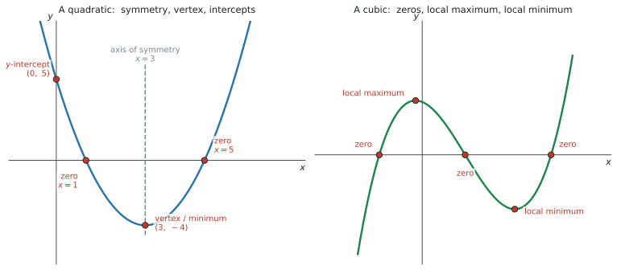
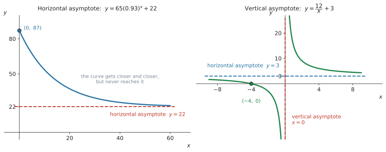
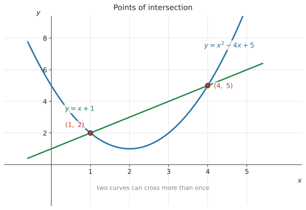

SL 2.4 — Key features of graphs（グラフの重要な特徴）
- グラフの key features が何なのかを、英語の名前で言える。
- zero・root・\(x\)-intercept が同じものだと分かる。
- 最大値・最小値を電卓で読み、値と座標を書き分けられる。
- axis of symmetry と vertex を求められる。
- vertical asymptote と horizontal asymptote の式を書ける。
- 2つのグラフの交点を電卓で求められる。
公式集の Topic 2 の欄には、SL 2.1 と SL 2.5 の式しかありません。
ただし、SL 2.5 の欄に載っている次の式は、この項目でそのまま使えます。
\[ f(x) = ax^{2} + bx + c \ \Rightarrow \ \text{axis of symmetry is } x = -\frac{b}{2a} \]
配られるので、覚える必要はありません。 覚えるべきなのは、key features の英語の名前のほうです。
シラバスの Guidance 欄に、はっきり using graphing technology と書かれています。
Maximum and minimum values; intercepts; symmetry; vertex; zeros of functions or roots of equations; vertical and horizontal asymptotes using graphing technology.
この項目は、電卓の操作そのものが中身です。 読むだけでは身につきません。ctrl + doc → 2: Add Graphs を開いた状態で読み進めてください。
The idea
SL 2.3 でグラフを「かく・読む」練習をしました。この項目は、その「読む」ほうに名前を付けて整理します。
1. key features の一覧
シラバスの Guidance 欄に並んでいるものが、そのまま答えられるようにしておくもののリストです。
| English | 日本語 | どういうものか |
|---|---|---|
| maximum value | 最大値 | グラフの山の高さ |
| minimum value | 最小値 | グラフの谷の深さ |
| intercepts | 切片 | 軸と交わる点（\(x\)-intercept・\(y\)-intercept） |
| symmetry | 対称性 | 折り返して重なる線（axis of symmetry） |
| vertex | 頂点 | 2次関数の山・谷の点 |
| zeros / roots | 零点・解 | \(f(x) = 0\) になる \(x\) |
| vertical asymptote | 垂直漸近線 | グラフが近づいていく縦の線 |
| horizontal asymptote | 水平漸近線 | グラフが近づいていく横の線 |
図 1 に、まとめて示しました。

SL 2.3 で「key features にラベルを付けなさい」と言われました。その key features の中身が、この項目です。
つまり SL 2.4 で名前と求め方を覚え、SL 2.3 のかき方でそれを紙に書く、という関係になっています。
2. zero・root・\(x\)-intercept は同じものです
シラバスの言い方は、こうです。
zeros of functions or roots of equations
同じ \(x\) を、3つの言い方で呼んでいるだけです。
| 言い方 | どういう場面で使うか |
|---|---|
| zero of the function \(f\) | 関数の話をしているとき |
| root of the equation \(f(x) = 0\) | 方程式の話をしているとき |
| \(x\)-intercept of the graph | グラフの話をしているとき |
\(f(x) = x^{2} - 6x + 5\) なら、\(x = 1\) と \(x = 5\) が
- \(f\) の zeros
- \(x^{2} - 6x + 5 = 0\) の roots
- グラフの \(x\)-intercepts
です。どれで聞かれても、電卓でやることは同じです。
menu → 6: Analyze Graph → 1: Zero聞かれ方によって、答えの形が変わります。
Find the zeros of f.→ \(x = 1\)、\(x = 5\)（数を答える）Write down the coordinates of the x-intercepts.→ \((1,\ 0)\)、\((5,\ 0)\)（座標を答える）
coordinates と書いてあったら、必ず \((\ ,\ )\) の形で答えてください。
3. 最大値・最小値は「値」と「点」を書き分けます
ここが、この項目で一番落とすところです。
| 聞かれ方 | 答えるもの | 例 |
|---|---|---|
| the maximum value | \(y\) の値だけ | \(20\) |
| the coordinates of the maximum point | 座標 | \((2,\ 20)\) |
| the value of \(x\) at which the maximum occurs | \(x\) の値だけ | \(2\) |
電卓は \((2,\ 20)\) という座標で出してきます。ですから、そこから聞かれたぶんだけを取り出すという作業が必ず入ります。
local maximum と local minimum
図 1 の右側の cubic には、山と谷が1つずつあります。この山は「そのあたりで一番高い」だけで、グラフ全体で一番高いわけではありません（右へ行けば、もっと高くなります）。
このような山を local maximum（極大）、谷を local minimum（極小）と呼びます。
domain が指定されている問題では、端の点にも気をつけてください。 山より端のほうが高いことがあります。
Topic 2 では、maximum や minimum をグラフと GDC から読み取ります。 Topic 5 では、derivative（導関数）を使って、その場所を数学的に調べます。
The maximum profit is 200 dollars. のように、数だけでなく「何が」「いくつ」なのかを1文で書くのが AI SL の点の取り方です。
\((15,\ 200)\) とだけ書いて終わると、聞かれたことに答えていないことになります。
4. axis of symmetry と vertex
2次関数のグラフは、縦の線について左右対称です。その線を axis of symmetry（対称軸）といいます。
公式集（SL 2.5 の欄）に、次の式が載っています。
\[ f(x) = ax^{2} + bx + c \ \Rightarrow \ \text{axis of symmetry is } x = -\frac{b}{2a} \tag{1}\]
\(f(x) = x^{2} - 6x + 5\) なら \(a = 1\)、\(b = -6\) なので
\[ x = -\frac{-6}{2(1)} = 3 \]
検算。 \(f(1) = 0\) と \(f(5) = 0\) の真ん中は \(\dfrac{1 + 5}{2} = 3\) ✓（図 1 左）
axis of symmetry は「式」で答えます
答えは \(x = 3\) です。\(3\) とだけ書くと点になりません。
axis of symmetry は線なので、線の式で答える必要があります。
vertex は、そこに代入して出します
vertex（頂点）は、axis of symmetry の上にあります。ですから \(x = 3\) を式に入れれば \(y\) が出ます。
\[ f(3) = 3^{2} - 6(3) + 5 = -4 \ \Rightarrow \ \text{vertex } (3,\ -4) \]
電卓なら1手です。
menu → 6: Analyze Graph → 2: Minimum5. asymptote
asymptote（漸近線）は、グラフがある方向へ進むとき、限りなく近づいていく直線です。
このページで扱う exponential model や inverse variation の代表例では、グラフは通常その漸近線に達しません。ただし、一般にはグラフが horizontal asymptote と交わることもあります。
「近づいていく」が定義で、「届かない」はそのつどグラフや式で確かめることです。

horizontal asymptote
\(x\) をどんどん大きく（または小さく）していったときに、\(y\) が近づいていく値です。
図 2 の左は \(y = 65(0.93)^{x} + 22\) です。\(0.93^{x}\) は \(x\) が大きくなると \(0\) に近づくので、残るのは \(22\) です。
\[ y = 22 \]
\(y = ka^{x} + c\) の形なら、horizontal asymptote は \(y = c\) です。 SL 2.5 の exponential model で、そのまま使います。
vertical asymptote
rational function（分数関数）では、まず分母が \(0\) になる \(x\) を vertical asymptote の候補として調べます。その \(x\) に近づいたとき、関数の値が非常に大きく、または非常に小さくなるなら、その \(x\) が vertical asymptote です。
約分によって因数が消える場合は、asymptote ではなく hole（穴）になることがあります。
\[ \frac{x^{2} - 1}{x - 1} = x + 1 \qquad (x \neq 1) \]
この場合、\(x = 1\) は vertical asymptote ではありません。
図 2 の右は \(y = \dfrac{12}{x} + 3\) です。分母が \(0\) になるのは \(x = 0\) で、\(x\) を \(0\) に近づけると \(\dfrac{12}{x}\) の値はいくらでも大きく（または小さく）なります。ですから
\[ x = 0 \]
が vertical asymptote です。この式では、\(y\) 軸そのものが asymptote になっています。
- horizontal → \(y = 22\)（\(22\) ではありません）
- vertical → \(x = 0\)（\(0\) ではありません）
どちらも線なので、線の式で答えます。 数だけ書いて落とす人がとても多いところです。
Analyze Graph に Asymptote という項目はありません。自分で見つけます。
- horizontal … \(x\) を大きくしたときに \(y\) が近づく値を、表（
ctrl + T）で見る - vertical … 分母が \(0\) になる \(x\) を候補として探し、その両側でグラフがどのように動くか確認する
さらに、電卓は \(x = 0\) のところで左右をつなぐ縦の線をかいてしまうことがあります。 これは asymptote ではなく、点を線で結んだだけのうその線です。紙に写すときは、この線をかいてはいけません。
6. 2つのグラフの交点
シラバスの Content 欄の2行目です。
Finding the points of intersection of two curves or lines using technology.

交点は「2つの式が同じ値になる点」です。ですから
\[ f(x) = g(x) \tag{2}\]
を解くことと、同じことをしています。
図 3 では \(y = x^{2} - 4x + 5\) と \(y = x + 1\) が \((1,\ 2)\) と \((4,\ 5)\) で交わっています。この \(x = 1\)、\(x = 4\) が、方程式 \(x^{2} - 4x + 5 = x + 1\) の解です。
menu → 6: Analyze Graph → 4: IntersectionIntersection は、指定した範囲の中の交点を1つだけ返します。
交点が2つあるなら、2回に分けて読んでください。 グラフを見て「いくつ交わっているか」を先に数えるのが確実です。
Why it works
ここでは、この例で asymptote に届かないのはなぜかだけを説明します。
\(y = \dfrac{12}{x} + 3\) で、\(y = 3\) になることがあるでしょうか。もしあるなら
\[ \frac{12}{x} + 3 = 3 \ \Rightarrow \ \frac{12}{x} = 0 \]
ですが、\(12\) を何で割っても \(0\) にはなりません。ですから、\(y = 3\) になる \(x\) は存在しません。
一方で、\(x = 1000\) なら \(\dfrac{12}{1000} = 0.012\) で \(y = 3.012\)。\(x = 1000000\) なら \(y = 3.000012\)。いくらでも近づけますが、この式では届きません。
これは \(y = \dfrac{12}{x} + 3\) という式の性質で、すべての asymptote についての説明ではありません。
Worked examples
問題文は英語です。意味が理解できなかったら、問題文の下の「日本語訳」を開いてください。解説は日本語です。
例題 1 The function \(f\) is defined by \(f(x) = x^{2} - 6x + 5\).
(a) Write down the coordinates of the \(y\)-intercept.
(b) Find the zeros of \(f\).
(c) Find the equation of the axis of symmetry.
(d) Write down the coordinates of the vertex.
日本語訳
関数 \(f\) が \(f(x) = x^{2} - 6x + 5\) で定められています。
(a) \(y\) 切片の座標を書きなさい。
(b) \(f\) の zeros を求めなさい。
(c) 対称軸の式を求めなさい。
(d) 頂点の座標を書きなさい。
(a) \(y\) 切片は \(x = 0\) のところです。
\[ f(0) = 0 - 0 + 5 = 5 \]
coordinates と書いてあるので、\((0,\ 5)\) と座標で答えます。
(b) zeros は \(f(x) = 0\) になる \(x\) です。
menu → 6: Analyze Graph → 1: Zero\(x = 1\) と \(x = 5\) です。\(2\) つあるので、\(2\) 回に分けて読みます。
ここは zeros と聞かれているので、数で答えます（\((1,\ 0)\) ではありません）。
(c) 公式に \(a = 1\)、\(b = -6\) を入れます。
\[ x = -\frac{-6}{2(1)} = 3 \]
検算。 (b) の \(1\) と \(5\) の真ん中は \(3\) ✓
答えは \(x = 3\) です。\(3\) とだけ書くと点になりません。
(d) vertex は対称軸の上にあるので、\(x = 3\) を入れます。
\[ f(3) = 9 - 18 + 5 = -4 \]
(a) \(f(0) = 5\), so the \(y\)-intercept is \((0,\ 5)\)
(b) \(x = 1\) and \(x = 5\)
(c) \(x = -\dfrac{-6}{2(1)} = 3\), so the axis of symmetry is \(x = 3\)
(d) \(f(3) = -4\), so the vertex is \((3,\ -4)\)
例題 2 The daily profit, in dollars, of a small shop selling \(x\) items is modelled by
\[ P(x) = -2x^{2} + 60x - 250, \qquad 0 \leq x \leq 30 \]
(a) Find the number of items that gives the maximum profit.
(b) Find the maximum profit.
(c) Find the values of \(x\) for which the profit is zero.
(d) Interpret your answers to part (c) in the context of the question.
日本語訳
ある小さな店の1日の利益（ドル）が、\(x\) 個売ったとき
\[ P(x) = -2x^{2} + 60x - 250, \qquad 0 \leq x \leq 30 \]
でモデル化されています。
(a) 利益が最大になる個数を求めなさい。
(b) 最大の利益を求めなさい。
(c) 利益が \(0\) になる \(x\) の値を求めなさい。
(d) (c) の答えを、この問題の文脈で解釈しなさい。
(a) 電卓でグラフをかいて、山の点を読みます（GDCの使い方）。
menu → 6: Analyze Graph → 3: Maximum\((15,\ 200)\) が出ます。ここで聞かれているのは「個数」なので、\(x\) の値だけを答えます。
\[ x = 15 \]
(b) 同じ点の \(y\) のほうです。
\[ P(15) = -2(225) + 60(15) - 250 = 200 \]
\(200\) ドルです。(a) と (b) で、同じ座標から違う数を取り出していることに注意してください（表 3）。
(c) \(P(x) = 0\) になる \(x\) なので、zeros です。
menu → 6: Analyze Graph → 1: Zero\(x = 5\) と \(x = 25\) です。
(d) 数を出しただけでは点になりません。この数が現実の何なのかを書きます。
利益が \(0\) ということは、もうけも損もないということです。\(5\) 個から \(25\) 個のあいだで売れば、利益が出ます。
試験ではこう書く
The shop breaks even when it sells 5 items or 25 items. Between these values the profit is positive, so the shop makes a profit when it sells between 5 and 25 items.
（\(5\) 個と \(25\) 個で収支がちょうど \(0\) になり、そのあいだで売れば利益が出る、という意味です。）
(a) \(x = 15\) items
(b) \(P(15) = 200\), so the maximum profit is \(200\) dollars
(c) \(x = 5\) and \(x = 25\)
(d) The shop breaks even when it sells 5 items or 25 items. Between these values the profit is positive, so the shop makes a profit when it sells between 5 and 25 items.
例題 3 A function is defined by \(f(x) = \dfrac{12}{x} + 3\), for \(x \neq 0\).
(a) Write down the equation of the vertical asymptote.
(b) Write down the equation of the horizontal asymptote.
(c) Find the \(x\)-intercept of the graph of \(f\).
(d) Explain why the graph of \(f\) has no \(y\)-intercept.
日本語訳
\(x \neq 0\) に対して、関数が \(f(x) = \dfrac{12}{x} + 3\) で定められています。
(a) 垂直漸近線の式を書きなさい。
(b) 水平漸近線の式を書きなさい。
(c) \(f\) のグラフの \(x\) 切片を求めなさい。
(d) \(f\) のグラフに \(y\) 切片がない理由を説明しなさい。
(a) 分母が \(0\) になる \(x\) を探します。\(\dfrac{12}{x}\) の分母が \(0\) になるのは \(x = 0\) で、そこに近づくと値がいくらでも大きく（小さく）なります。
\[ x = 0 \]
「\(0\)」ではなく「\(x = 0\)」と書きます。
(b) \(x\) を大きくすると \(\dfrac{12}{x}\) は \(0\) に近づくので、残るのは \(3\) です。
\[ y = 3 \]
検算。 \(x = 1000\) で \(f = 3.012\)、\(x = 10000\) で \(f = 3.0012\) ✓ 近づいています。
(c) \(x\) 切片は \(f(x) = 0\) のところです。
\[ \frac{12}{x} + 3 = 0 \ \Rightarrow \ \frac{12}{x} = -3 \ \Rightarrow \ x = -4 \]
電卓なら Analyze Graph → Zero でも出ます。座標で答えるなら \((-4,\ 0)\) です。
(d) \(y\) 切片は \(x = 0\) を入れたときの値ですが、\(x = 0\) は入れられません。
試験ではこう書く
The \(y\)-intercept would be \(f(0)\), but this requires dividing by zero, so \(f(0)\) is undefined. The graph therefore has no \(y\)-intercept.
（\(y\) 切片は \(f(0)\) ですが、\(0\) で割ることになるので定義できない、という意味です。）
(a) \(x = 0\)
(b) \(y = 3\)
(c) \(\dfrac{12}{x} + 3 = 0 \Rightarrow \dfrac{12}{x} = -3 \Rightarrow x = -4\)
(d) \(f(0)\) is undefined because it requires dividing by zero, so the graph has no \(y\)-intercept.
例題 4 The temperature of a cup of coffee, in degrees Celsius, \(t\) minutes after it is made is modelled by
\[ T(t) = 65(0.93)^{t} + 22, \qquad t \geq 0 \]
(a) Write down the temperature of the coffee when it is made.
(b) Write down the equation of the horizontal asymptote of the graph of \(T\).
(c) Interpret the value found in part (b) in the context of the question.
(d) Find the time taken for the coffee to cool to 40 degrees Celsius. Give your answer correct to three significant figures.
日本語訳
コーヒーの温度（摂氏）が、いれてから \(t\) 分後に
\[ T(t) = 65(0.93)^{t} + 22, \qquad t \geq 0 \]
でモデル化されています。
(a) いれた瞬間のコーヒーの温度を書きなさい。
(b) \(T\) のグラフの水平漸近線の式を書きなさい。
(c) (b) で求めた値を、この問題の文脈で解釈しなさい。
(d) コーヒーが摂氏 \(40\) 度まで冷めるのにかかる時間を、有効数字3桁で求めなさい。
(a) 「いれた瞬間」は \(t = 0\) です。
\[ T(0) = 65(1) + 22 = 87 \]
\(87\) 度です（\(0.93^{0} = 1\) です）。
(b) \(y = ka^{x} + c\) の形なので、\(c\) の値です。
\[ T = 22 \]
軸の文字に合わせて \(T = 22\) と書きます。 この問題では縦軸が \(T\) なので、\(y = 22\) ではありません。
(c) コーヒーは冷めていって、\(22\) 度に近づきますが、それより下がりません。 これは部屋の温度です。
試験ではこう書く
The coffee cools towards 22 degrees but never goes below it, so 22 degrees is the temperature of the room.
（コーヒーは \(22\) 度に向かって冷めていくが、それより下がらない。つまり \(22\) 度は部屋の温度である、という意味です。）
(d) \(T = 40\) になる \(t\) を求めます。グラフを2本かいて交点を読むのが速いです。
f1(x) = 65(0.93)^x + 22
f2(x) = 40
menu → 6: Analyze Graph → 4: Intersection\(t = 17.693\ldots\) なので、有効数字3桁で \(17.7\) 分です。
検算。 \(T(17.7) \approx 40.0\) ✓
(a) \(T(0) = 87\) degrees
(b) \(T = 22\)
(c) The coffee cools towards 22 degrees but never goes below it, so 22 degrees is the temperature of the room.
(d) \(65(0.93)^{t} + 22 = 40\), so \(t = 17.69\ldots = 17.7\) minutes (3 s.f.)
例題 5 Two functions are defined by \(f(x) = x^{2} - 4x + 5\) and \(g(x) = x + 1\).
(a) Use your GDC to find the coordinates of the points of intersection of the graphs of \(f\) and \(g\).
(b) Hence write down the solutions of the equation \(x^{2} - 4x + 5 = x + 1\).
(c) Write down the coordinates of the vertex of the graph of \(f\).
日本語訳
2つの関数が \(f(x) = x^{2} - 4x + 5\)、\(g(x) = x + 1\) で定められています。
(a) 電卓を使って、\(f\) と \(g\) のグラフの交点の座標を求めなさい。
(b) これを使って、方程式 \(x^{2} - 4x + 5 = x + 1\) の解を書きなさい。
(c) \(f\) のグラフの頂点の座標を書きなさい。
(a) 2本を同時にかきます。
f1(x) = x^2 - 4x + 5
f2(x) = x + 1
menu → 6: Analyze Graph → 4: Intersection交点は2つあります（図 3）。1回では1つしか出ないので、2回に分けて読みます。
\[ (1,\ 2) \quad \text{と} \quad (4,\ 5) \]
検算。 \(f(1) = 1 - 4 + 5 = 2\)、\(g(1) = 2\) ✓
(b) Hence は「直前の答えを使え」という意味です。交点の \(x\) 座標が、そのまま方程式の解になります。
\[ x = 1, \quad x = 4 \]
ここで聞かれているのは方程式の解なので、\(x\) の値だけを書きます。
(c) vertex です。\(a = 1\)、\(b = -4\) なので
\[ x = -\frac{-4}{2(1)} = 2, \qquad f(2) = 4 - 8 + 5 = 1 \]
(a) \((1,\ 2)\) and \((4,\ 5)\)
(b) \(x = 1\) and \(x = 4\)
(c) \(x = -\dfrac{-4}{2(1)} = 2\) and \(f(2) = 1\), so the vertex is \((2,\ 1)\)
Common errors
the maximum value は \(y\) の値だけです。\(20\) と書きます。
逆に the coordinates of the maximum point なら \((2,\ 20)\) です。電卓は必ず座標で出してくるので、そこから聞かれたぶんを取り出してください（表 3）。
同じ \(x\) の、3つの呼び方です（表 2）。
Find the roots of the equation と言われても、電卓でやることは Analyze Graph → Zero で変わりません。
\(22\) ではなく \(y = 22\)。\(0\) ではなく \(x = 0\)。
asymptote は線なので、線の式で答えます。axis of symmetry も同じで、\(3\) ではなく \(x = 3\) です。
TI-Nspire は \(y = \dfrac{12}{x}\) のようなグラフで、\(x = 0\) の左右をつなぐ縦の線をかいてしまうことがあります。
これはグラフの一部ではありません。 点を線で結んだだけです。紙に写すときは、この線をかいてはいけません。
\(y = ka^{x}\) なら \(y = 0\) ですが、\(y = ka^{x} + c\) なら \(y = c\) です。
\(+ c\) の部分を見落とすと、そのまま失点します。式の最後の定数を必ず見てください。
Intersection は1回に1つしか返しません。
まずグラフを見て、いくつ交わっているかを数えてから、その回数だけ実行してください。
\(0 \leq x \leq 30\) と書いてあるのに、電卓が範囲外で見つけた点を答えてしまう誤りです。
Window を問題の domain に合わせてから読むと、この誤りは起きません。
Interpret や Comment on が付いていたら、英語の一文が答えです。
\(x = 5\)、\(x = 25\) とだけ書いても、Interpret の点は \(0\) です。「これが現実の何なのか」を必ず書いてください。
Using your GDC (TI-Nspire CX II)
この項目は、電卓の操作そのものが中身です。
1. グラフを出す
ctrl + doc → 2: Add Graphs
f1(x) = x^2 - 6x + 52. 全体が見える大きさにする
先にこれをやります。 画面に入っていないものは読めません。
menu → Window/Zoom → Zoom - Fitdomain が指定されている問題では、Window Settings でその範囲を手で入れるほうが確実です。範囲外の点を答える誤りが防げます。
3. key features を読む
menu → 6: Analyze Graph → 1: Zero （x 切片・zeros・roots）
menu → 6: Analyze Graph → 2: Minimum （最小点・下向きの vertex）
menu → 6: Analyze Graph → 3: Maximum （最大点・上向きの vertex）
menu → 6: Analyze Graph → 4: Intersection （2本のグラフの交点）どれも同じ操作の流れです。
- メニューから選ぶ
- グラフをクリックする（
Intersectionは2本ともクリック） lower bound?と出たら、左の境目を決めてenterupper bound?と出たら、右の境目を決めてenter- そのあいだにある1つの座標が表示される
lower bound? と upper bound? の \(2\) 回、enter を押します
答えが出ないときは、たいていこれです。
画面の左下に
lower bound?と出ているあいだ、電卓はあなたが範囲を決めるのを待っています。 ここで enter を押さないと先へ進みません。決めると点線が \(1\) 本立ち、続けて
upper bound?に変わります。もう \(1\) 回 enter を押すと、\(2\) 本の点線にはさまれた帯（画面では灰色になります）の中を探して、座標が出ます。
「電卓が壊れた」と思ってやり直す生徒が、毎年います。 画面の左下を見てください。
カーソルを動かして合わせるほかに、数を直接打ちこむこともできます。\(-1\) と打って enter、\(3\) と打って enter、という具合です。
そのほうが速くて、狙った範囲になります。
これがこの操作の一番大事な性質です。囲んだ範囲の中にあるものを、1つだけ返します。
zeros が2つあるなら、左の1つを囲んで実行 → 右の1つを囲んで実行、と2回やります。交点も同じです。
ですから、探したいものが \(2\) 本の点線のあいだに入っているかを、enter を押す前に目で確かめてください。
\(y\) 切片は、Analyze Graph を使うより \(x = 0\) を式に入れるほうが速いことが多いです。
4. asymptote を見つける
Analyze Graph に asymptote はありません。 次の2つで探します。
horizontal … \(x\) をうんと大きくしたときに、\(y\) がどの値に近づくかを見ます。やり方は \(2\) つあります。
方法1：表を出す
ctrl + T\(x = 100\)、\(x = 1000\) と入れて、\(y\) がどの値に近づくかを読みます。
方法2：Trace で、大きい \(x\) を打ちこむ
menu → Trace → Graph Traceカーソルが曲線に乗った状態で、\(x\) の値を直接打ちこむとそこへ飛びます。100000 のような大きい数を入れてください。
\(y\) が 3E-5 のように表示されたら
画面が狭いので、電卓は小さい数を \(E\) の形で表示します。\(3 \times 10^{-5}\) という意味です。
\[ \texttt{3E-5} \ = \ 3 \times 10^{-5} \ = \ 0.00003 \]
これは「ほとんど \(0\)」ということです。\(x\) をもっと大きくすれば、もっと \(0\) に近づきます。ですから horizontal asymptote は \(y = 0\) と読みます。
3E-5 を「\(3\) に近づいている」と読まないでください
E のあとのマイナスを見落とすと、まったく違う答えになります。
| 表示 | 意味 | 読み取り |
|---|---|---|
3E-5 |
\(0.00003\) | \(y = 0\) に近づいている |
3E5 |
\(300\,000\) | \(0\) には近づいていない |
マイナスが付いていたら、小さい数です。
いっしょに出る 1E+5 は \(x\) のほうの表示です。\(100\,000\) を打ちこんだので、\(1 \times 10^{5}\) と表示されています。
答案には 3E-5 と書いてはいけません。 \(y = 0\)、または \(3 \times 10^{-5}\) と書きます（SL 1.1 と同じ決まりです）。
vertical … 式を見て、分母が \(0\) になる \(x\) を候補として探します。\(\dfrac{12}{x}\) なら \(x = 0\)、\(\dfrac{5}{x - 2}\) なら \(x = 2\)。そのうえで、その両側でグラフがどう動くかを画面で確かめてください。
5. 方程式を交点で解く
\(f(x) = 40\) のような式は、\(2\) 本のグラフの交点として読めます。
f1(x) = 65(0.93)^x + 22
f2(x) = 40
menu → 6: Analyze Graph → 4: Intersectionf2 は横一直線になります。SL 1.8 で使ったやり方と同じです。
Intersection でも、\(2\) 本のグラフをクリックしたあとに lower bound? と upper bound? を聞かれます。 交点が \(2\) つあるときは、片方ずつ囲んで \(2\) 回実行してください。
シラバスの Use of technology 欄に、こう書かれています。
Graphing technology with sliders to determine the effects of altering parameters and variables
menu → Actions → Insert Sliderたとえば f1(x) = a*x^2 + b*x + c として \(a\)、\(b\)、\(c\) をスライダーにすると、\(b\) を動かしたときに axis of symmetry がどう動くかが目で見えます。
試験で使うものではありませんが、\(-\dfrac{b}{2a}\) が腑に落ちない人には効きます。
Exercises
各問題に、折りたたみが3つ付いています。日本語訳、解答例（答案用紙に書くべきこと。英語です）、解説（なぜそうなるか。日本語です）。
まず自分で解いて、次に解答例と見くらべてください。解説は、合わなかったときだけ開けば十分です。
1 The function \(f\) is defined by \(f(x) = x^{2} - 8x + 12\).
(a) Write down the coordinates of the \(y\)-intercept.
(b) Find the zeros of \(f\).
(c) Find the equation of the axis of symmetry.
(d) Write down the coordinates of the vertex.
日本語訳
関数 \(f\) が \(f(x) = x^{2} - 8x + 12\) で定められています。
(a) \(y\) 切片の座標を書きなさい。
(b) \(f\) の zeros を求めなさい。
(c) 対称軸の式を求めなさい。
(d) 頂点の座標を書きなさい。
(a) \(f(0) = 12\), so the \(y\)-intercept is \((0,\ 12)\)
(b) \(x = 2\) and \(x = 6\)
(c) \(x = -\dfrac{-8}{2(1)} = 4\), so the axis of symmetry is \(x = 4\)
(d) \(f(4) = 16 - 32 + 12 = -4\), so the vertex is \((4,\ -4)\)
(a) は \(x = 0\) を入れるだけです。coordinates なので \((0,\ 12)\) と座標で書きます。
(b) は Analyze Graph → Zero を2回。zeros なので数で答えます。
(c) は公式集の \(x = -\dfrac{b}{2a}\) に \(a = 1\)、\(b = -8\) を入れます。検算：(b) の \(2\) と \(6\) の真ん中は \(4\) ✓
(d) は \(x = 4\) を式に入れるだけです。Analyze Graph → Minimum でも同じ答えになります。
2 The function \(g\) is defined by \(g(x) = -x^{2} + 4x + 5\).
(a) Write down the maximum value of \(g\).
(b) Write down the coordinates of the maximum point.
(c) Find the zeros of \(g\).
日本語訳
関数 \(g\) が \(g(x) = -x^{2} + 4x + 5\) で定められています。
(a) \(g\) の最大値を書きなさい。
(b) 最大点の座標を書きなさい。
(c) \(g\) の zeros を求めなさい。
(a) \(9\)
(b) \((2,\ 9)\)
(c) \(x = -1\) and \(x = 5\)
(a) と (b) は、同じ点から取り出しています。 電卓の Analyze Graph → Maximum は \((2,\ 9)\) と座標で出しますが、(a) は the maximum value なので \(y\) の値だけを書きます。
ここを座標で書いてしまう人がとても多いところです（表 3）。
\(x^{2}\) の係数が \(-1\)（負）なので、グラフは上に凸です。だから山になります。
3 A function is defined by \(f(x) = 50(0.8)^{x} + 12\).
(a) Write down the value of \(f(0)\).
(b) Write down the equation of the horizontal asymptote.
(c) Find \(f(10)\), giving your answer correct to three significant figures.
日本語訳
関数が \(f(x) = 50(0.8)^{x} + 12\) で定められています。
(a) \(f(0)\) の値を書きなさい。
(b) 水平漸近線の式を書きなさい。
(c) \(f(10)\) を有効数字3桁で求めなさい。
(a) \(f(0) = 50 + 12 = 62\)
(b) \(y = 12\)
(c) \(f(10) = 17.369\ldots = 17.4\) (3 s.f.)
(a) \(0.8^{0} = 1\) です。\(0\) ではありません。
(b) \(y = ka^{x} + c\) の形なので、最後の定数 \(c = 12\) が答えです。\(y = 0\) と書く誤りが多いところです。
(c) 電卓に入れるだけですが、\(12\) に近づいてはいても、まだ \(17.4\) です。asymptote は「近づいていく先」であって、\(x = 10\) での値ではありません。
4 A function is defined by \(f(x) = \dfrac{8}{x} - 2\), for \(x \neq 0\).
(a) Write down the equations of the two asymptotes.
(b) Find the \(x\)-intercept of the graph of \(f\).
日本語訳
\(x \neq 0\) に対して、関数が \(f(x) = \dfrac{8}{x} - 2\) で定められています。
(a) 2本の漸近線の式を書きなさい。
(b) \(f\) のグラフの \(x\) 切片を求めなさい。
(a) \(x = 0\) and \(y = -2\)
(b) \(\dfrac{8}{x} - 2 = 0 \Rightarrow \dfrac{8}{x} = 2 \Rightarrow x = 4\), so the \(x\)-intercept is \((4,\ 0)\)
(a) vertical は「分母が \(0\) になる \(x\)」を候補として探して \(x = 0\)。\(x\) を \(0\) に近づけると \(\dfrac{8}{x}\) の値がいくらでも大きく（小さく）なるので、\(x = 0\) が vertical asymptote です。horizontal は \(x\) を大きくすると \(\dfrac{8}{x}\) が \(0\) に近づくので、残る \(-2\) です。
どちらも式で書きます。 \(0\) と \(-2\) とだけ書くと点になりません。
(b) \(f(x) = 0\) とおいて解きます。Analyze Graph → Zero でも出ます。
5 Two functions are defined by \(f(x) = x^{2} - 2x - 3\) and \(g(x) = 2x - 3\).
(a) Use your GDC to find the coordinates of the points of intersection of the two graphs.
(b) Hence write down the solutions of the equation \(x^{2} - 2x - 3 = 2x - 3\).
日本語訳
2つの関数が \(f(x) = x^{2} - 2x - 3\)、\(g(x) = 2x - 3\) で定められています。
(a) 電卓を使って、2つのグラフの交点の座標を求めなさい。
(b) これを使って、方程式 \(x^{2} - 2x - 3 = 2x - 3\) の解を書きなさい。
(a) \((0,\ -3)\) and \((4,\ 5)\)
(b) \(x = 0\) and \(x = 4\)
交点は2つあるので、Intersection を2回実行します。
検算：\(f(4) = 16 - 8 - 3 = 5\)、\(g(4) = 8 - 3 = 5\) ✓
(b) の Hence は「(a) を使え」という意味です。交点の \(x\) 座標が、そのまま方程式の解になります。ここでは方程式の解を聞かれているので、\(x\) の値だけを書きます。
6 The function \(f\) is defined by \(f(x) = x^{3} - 3x^{2} + 1\) for \(-1 \leq x \leq 3\).
(a) Use your GDC to find the coordinates of the local maximum point and the local minimum point.
(b) Find the zeros of \(f\), giving your answers correct to three significant figures.
日本語訳
\(-1 \leq x \leq 3\) に対して、関数 \(f\) が \(f(x) = x^{3} - 3x^{2} + 1\) で定められています。
(a) 電卓を使って、極大点と極小点の座標を求めなさい。
(b) \(f\) の zeros を有効数字3桁で求めなさい。
(a) local maximum \((0,\ 1)\), local minimum \((2,\ -3)\)
(b) \(x = -0.532\), \(x = 0.653\) and \(x = 2.88\) (3 s.f.)
(a) Analyze Graph → Maximum と → Minimum を1回ずつ。山を囲むときに、谷まで一緒に囲まないでください。 囲んだ範囲の中の1つしか返ってきません。
(b) zeros は3つあります。3回に分けて読みます。グラフを見て「何回 \(x\) 軸を横切っているか」を先に数えるのが確実です。
\(2.879\ldots\) は有効数字3桁で \(2.88\) です。\(2.879\) と書くと4桁になってしまいます。
7 The value of a car, in dollars, \(t\) years after it is bought is modelled by \(V(t) = 24000(0.85)^{t} + 1500\).
(a) Write down the value of the car when it is bought.
(b) Write down the equation of the horizontal asymptote.
(c) Interpret your answer to part (b) in the context of the question.
(d) Find the number of years for the car to be worth 10 000 dollars. Give your answer correct to three significant figures.
日本語訳
車の価値（ドル）が、買ってから \(t\) 年後に \(V(t) = 24000(0.85)^{t} + 1500\) でモデル化されています。
(a) 買ったときの車の価値を書きなさい。
(b) 水平漸近線の式を書きなさい。
(c) (b) の答えを、この問題の文脈で解釈しなさい。
(d) 車の価値が \(10\,000\) ドルになるまでの年数を、有効数字3桁で求めなさい。
(a) \(V(0) = 24000 + 1500 = 25\,500\) dollars
(b) \(V = 1500\)
(c) The value of the car falls towards 1500 dollars but never goes below it, so 1500 dollars is the lowest value the car can have.
(d) \(24000(0.85)^{t} + 1500 = 10000\), so \(t = 6.386\ldots = 6.39\) years (3 s.f.)
(b) の答えは、縦軸の文字に合わせて \(V = 1500\) と書きます。この問題では \(y\) ではありません。
(c) は Interpret なので、英語の一文が答えです。数字を書き写すだけでは点になりません。「\(1500\) ドルより下がらない」＝「これがこの車の最低の価値」という意味を書きます。
(d) は f2(x) = 10000 という横一直線をかいて、Intersection で読むのが速いです。
8 A company’s cost and revenue, in dollars, from selling \(x\) items are modelled by
\[ C(x) = 5x + 200, \qquad R(x) = 25x - 0.5x^{2} \]
(a) Use your GDC to find the number of items for which the cost equals the revenue.
(b) State how many points of intersection the two graphs have.
日本語訳
ある会社の、\(x\) 個売ったときの費用と収入（ドル）が
\[ C(x) = 5x + 200, \qquad R(x) = 25x - 0.5x^{2} \]
でモデル化されています。
(a) 電卓を使って、費用と収入が等しくなる個数を求めなさい。
(b) 2つのグラフの交点はいくつあるか述べなさい。
(a) \(x = 20\) items
(b) There is exactly one point of intersection.
これは交点が1つしかない場合です。2本のグラフは \((20,\ 300)\) で触れているだけで、交わって通り抜けてはいません。
検算：\(C(20) = 100 + 200 = 300\)、\(R(20) = 500 - 200 = 300\) ✓
「交点は必ず2つある」と思い込んでいると、もう1つを探して時間を使ってしまいます。 まずグラフを見て、いくつ交わっているかを数えてください。
9 A function is defined by \(f(x) = \dfrac{6}{x}\), for \(x \neq 0\).
(a) Write down the equations of the two asymptotes.
(b) Explain why the graph of \(f\) does not cross the \(x\)-axis.
(c) Find \(f(0.5)\).
日本語訳
\(x \neq 0\) に対して、関数が \(f(x) = \dfrac{6}{x}\) で定められています。
(a) 2本の漸近線の式を書きなさい。
(b) \(f\) のグラフが \(x\) 軸と交わらない理由を説明しなさい。
(c) \(f(0.5)\) を求めなさい。
(a) \(x = 0\) and \(y = 0\)
(b) Crossing the \(x\)-axis would need \(\dfrac{6}{x} = 0\), but 6 divided by any number is never 0, so there is no such value of \(x\).
(c) \(f(0.5) = \dfrac{6}{0.5} = 12\)
(a) この式には \(+ c\) がないので、horizontal asymptote は \(y = 0\)、つまり \(x\) 軸そのものです。vertical は \(x = 0\)、つまり \(y\) 軸です。2本の軸が、そのまま asymptote になっています。
(b) は Explain why なので、英語で理由を書きます。 「グラフを見たら交わっていない」では点になりません。\(\dfrac{6}{x} = 0\) になる \(x\) がない、と式で言い切ります。
(c) \(0.5\) で割るのは、\(2\) をかけるのと同じです。\(x\) が小さくなるほど \(y\) が大きくなる、という inverse variation の動きが見えます。
10 A ball is kicked upwards. Its height above the ground, in metres, after \(t\) seconds is modelled by
\[ h(t) = -5t^{2} + 30t, \qquad 0 \leq t \leq 6 \]
(a) Find the zeros of \(h\).
(b) Find the maximum height of the ball and the time at which it occurs.
(c) Interpret the zeros found in part (a) in the context of the question.
(d) State the range of \(h\) in this context.
日本語訳
ボールが上に蹴り上げられます。\(t\) 秒後の地面からの高さ（メートル）が
\[ h(t) = -5t^{2} + 30t, \qquad 0 \leq t \leq 6 \]
でモデル化されています。
(a) \(h\) の zeros を求めなさい。
(b) ボールの最高の高さと、そのときの時刻を求めなさい。
(c) (a) で求めた zeros を、この問題の文脈で解釈しなさい。
(d) この文脈での \(h\) の range を述べなさい。
(a) \(t = 0\) and \(t = 6\)
(b) \(t = -\dfrac{30}{2(-5)} = 3\) and \(h(3) = -45 + 90 = 45\), so the maximum height is 45 m, at \(t = 3\) seconds.
(c) The ball is on the ground at \(t = 0\), when it is kicked, and returns to the ground at \(t = 6\) seconds.
(d) \(0 \leq h(t) \leq 45\)
(b) で聞かれているのは「高さ」と「時刻」の2つです。電卓は \((3,\ 45)\) と座標で出しますが、そのまま座標で書くと、聞かれたことに答えていません。 単位（m と seconds）まで付けてください。
(c) は Interpret なので英語の一文です。\(t = 0\) にも意味があることを見落とさないでください（蹴った瞬間、まだ地面にあります）。
(d) は in this context なので、現実に起きる範囲です（SL 2.2 で扱いました）。一番低いのが地面の \(0\)、一番高いのが \(45\) です。